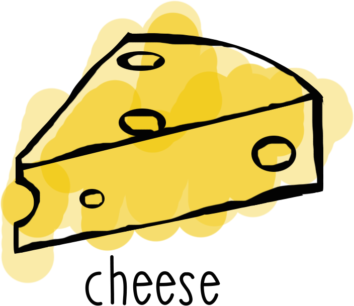
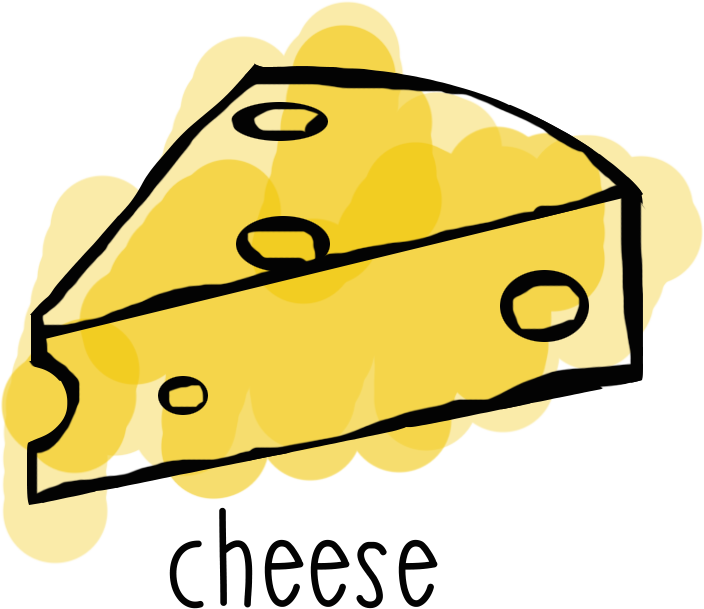

Choose a food from the list below and learn how to check if that food is still safe to eat using a simple kitchen trick. Let's have some fun!
Choose a food from the list below and learn how to check if that food is still safe to eat using a simple kitchen trick. Let's have some fun!
Use By and Best Before dates on food are often mistaken for markers of safety.
"If I eat this after the day, horrible things will start happening to me, right?"
Wrong.
These dates were first introduced as a guidance and as a marker of quality and not safety but all this confusion makes it unsurprising that 60% of the food thrown away in the UK is still perfectly safe to eat. If food waste were a country, it would be the third largest producer of greenhouse gasses in the world, after China and the USA. Yep, it's a big problem.
This is why we made this handy little tool, so you can learn how to tell if your food is off or not yourself and save yourself up to £700 a year (the average amount of good food a family wastes) and be kinder to the awesome place that we call home.
What kind of mold on cheese is ok?
Question 1: The correct answer is the Answer 1.
Here are some ideas for using up food that has passed its best:
Stale bread: Make breadcrumbs, french toast, bread & butter pudding, croutons, garlic bread.
Milk/yogurt: Stick whiffy dairy into a pancake mix as the heat will sterilise everything and you won't taste the difference!
Fruit: Chuck it all into a blender and make a delicious smoothie. Yum.
Vegetables: Ditto to the above but this time boil it with some water to make a soup.